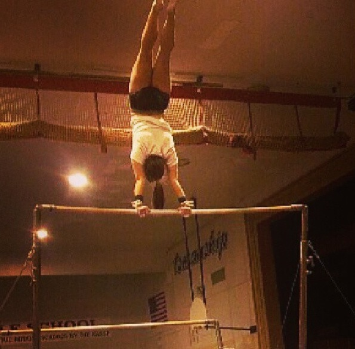

.JPG)
About Me
I was born in Yakima Washington and relocated to Seattle when I was 5 due to my dad's job in the Washington State Patrol. When I moved to Seattle my mom enrolled me in piano lessons and I started when I was only 5. I attended school in Seattle and picked up on the violin when I was about 12. When I was 14 we moved from Seattle to the Tri-Cities when my dad's job changed once again. I still played piano and violin and switched music teachers until I was 18.
When I was 5 I started gymnastics at a facility in Seattle and continued to a different gym when we moved. I did competitive gymnastics until I was 18. When I was 12 I started competitive cheer in Tri-Cities and continued to do it into college. I was an Eastern Cheerleader for two years and was scouted for different schools but decided that EWU was going to be the school for me.

Starting my second year on Eastern cheer, during a football game while tumbling out of the tunnel I tore my ACL. I still wanted to do sports but I knew the healing process for an ACL tear would be about a year. I got surgery the same year I tore it and decided against getting back into cheer and gymnastics.
Work
Since tearing my ACL, I decided it was time to pass on my knowledge and to find a job that would suit me. I have been coaching at Build-It Athletix for almost two years and it's made me realize how much I like coaching. The ages we coach are from 3-18 and requires a lot of patience and creativity when dealing with such a large age gap. I enjoy coaching and I see the ending of my cheer career as a blessing in disguise so I can help other kids be great gymanstics and cheerleaders.
Hobbies
I have always enjoyed being outdoors and learning new activities. I enjoy hiking, rafting, rock climbing, and anything that has to do with bikes. During the winter I like to go snowboarding and skiing along with snow mobiling. My family travels to Colorado regularly during the winter to be with relatives and to go on ski trips. I was fortunate enough to be with such an active family who has a broad range of activities.
I really enjoy music and I have been playing piano for 17 years, violin for 10, and just recently learned guitar a couple years ago. I have taken an interest in not only learning how to play instruments, but also on reading books on different music icons. A couple of very big inspirations for how passionate I am about music are Kurt Cobain and Patti Smith. I have read almost every book on them and they are what drive me to stay involved in the music industry. I like listening, making, and producing music with people and it has turned out to be a big part in my life and where I want to go in my profession.